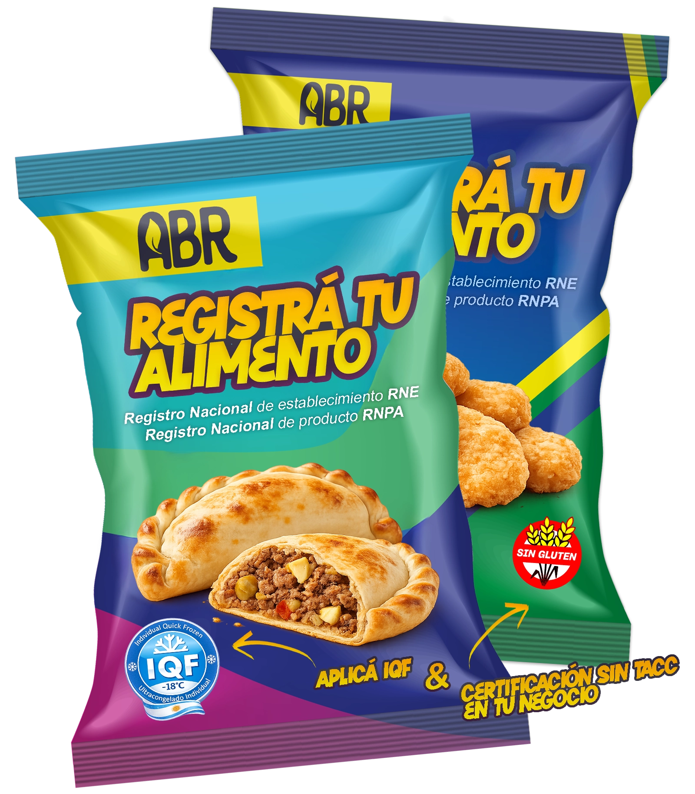
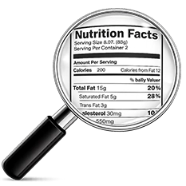

Capacitaciones claras, dinámicas y aplicables para equipos de trabajo. Mejoramos prácticas reales para que tu empresa trabaje con más control, orden y seguridad.
Asesoría Bromatológica Rosario
Transformamos tu negocio de alimentos en un proyecto Seguro Habilitado Rentable
Te acompañamos con asesoría técnica real para que produzcas con confianza, cumplas normativas sin dolores de cabeza y logres una calidad consistente que te permita vender más y crecer.
Trabajo con industrias, PyMEs y comercios en todo el país y todos los rubros: cárnicos, embutidos, panificados, lácteos, bebidas, conservas, congelados, rotiserías y gastronomía.
Tu asesor técnico
Lic. en Tecnología de los Alimentos
Químico
Magíster en Alimentos
Enfoque práctico y orientado a resultados: mejoramos procesos, ordenamos la producción, reducimos riesgos y dejamos todo listo para inspecciones, habilitaciones y comercialización.

Evaluamos tu empresa con criterio técnico y práctico: higiene, procesos, trazabilidad, registros y riesgos. Te llevás un plan de mejoras claro para elevar la calidad y cumplir normativas.
Gestionamos toda la documentación para que tu negocio esté habilitado y listo para vender. Manuales, registros y acompañamiento completo para tramitar RNE y RNPA.
Implementación de sistemas para ordenar tu producción y trabajar con estándares. Ideal si querés crecer, mejorar controles y estar preparado para auditorías externas.
Desarrollo y acompañamiento técnico para DOMI sanitario, registros, documentación, formulaciones, rotulado y puesta en regla de productos de higiene, saneantes y soluciones vinculadas al control sanitario para empresas que necesitan lanzar o regularizar líneas.

Si querés ingresar al mercado apto celíacos, te acompaño con un proceso serio: prevención de contaminación cruzada, control de materias primas y documentación técnica.

Asesoramiento técnico en procesos de congelado para mejorar rendimiento y calidad final. Control térmico, estabilidad del producto y estandarización lote a lote.
Confecciono el rótulo completo y legal de tus productos para que puedas vender sin trabas ni observaciones. Armamos todo lo que exige la normativa: lista de ingredientes, alérgenos, tabla nutricional, peso neto, lote, vencimiento, condiciones de conservación y declaraciones permitidas.

Nuevo servicio exclusivo
BackOffice para tu empresa alimentaria
Una plataforma visual, intuitiva y desarrollada a medida de tu operación para que tu empresa deje de depender de planillas dispersas, controles manuales y seguimientos improvisados. Centralizás inventario, recetas, trazabilidad, documentación regulatoria y vencimientos en un entorno moderno con look & feel premium, pensado para industrias, PyMEs y producciones que necesitan crecer con orden, velocidad y control.
Inventario y compras conectadas
Gestioná stock, lotes, RNE de proveedores, facturas y movimientos con una vista clara para tomar decisiones sin fricción.
Recetas, tablas y etiquetado
Creá recetas técnicas, generá tablas nutricionales, octógonos y etiquetas listas para impresión Zebra con consistencia profesional.
Trazabilidad y auditoría en tiempo real
Controlá producciones, lotes, QR escaneables, planillas para auditoría y vencimientos críticos desde una única fuente de verdad.
¿Qué resuelve?
- Gestiona inventario, lotes y documentación de proveedores con RNE asociado.
- Crea recetas productivas, tablas nutricionales y octógonos listos para imprimir.
- Ordena producciones y genera trazabilidad completa escaneable mediante QR.
- Emite planillas y registros para auditorías internas y externas.
- Controla vencimientos de RNPA, habilitaciones y unidades de transporte/reparto.
- Integra IA para agilizar procesos, consultas y análisis operativos.
- Centraliza facturas y respaldos de proveedores en un solo flujo.
- Se adapta a medida a la lógica real de tu negocio y tu forma de producir.
Por qué genera interés real
No es un sistema genérico: es una solución diseñada para empresas de alimentos y producciones que necesitan combinar orden operativo, cumplimiento regulatorio y presentación profesional. Cada pantalla está pensada para verse bien, ser simple de usar y mostrar información crítica de forma visual, rápida y accionable.

Inventario inteligente
Control visual de stock, categorías, umbrales y accesos rápidos para operar con velocidad y precisión.

Recetas + RNPA
Recetas productivas, alertas de vencimiento y etiquetado nutricional listos para documentación y comercialización.

Producción guiada
Seguimiento de elaboraciones, cobertura de insumos y lectura clara del estado productivo lote a lote.

Trazabilidad QR
Visualización completa del recorrido del producto desde el ingreso hasta la fabricación, con datos listos para auditar.

Historial operativo
Producciones, responsables, vencimientos e insumos usados en una vista ejecutiva tan atractiva como útil para gestionar.